quem é frank ocean
Frank Ocean nasceu como Christopher Edwin Breaux em 28 de outubro de 1987, na cidade de Long Beach, Califórnia, Estados Unidos. Ainda jovem, mudou-se para Nova Orleans, onde desenvolveu seu interesse pela música. Após o furacão Katrina destruir seu estúdio de gravação, ele mudou-se para Los Angeles para perseguir sua carreira artística.
Antes da fama, Frank trabalhou como compositor para diversos artistas famosos. Em 2011, lançou a mixtape "Nostalgia, Ultra", que recebeu grande reconhecimento da crítica e do público. Desde então, tornou-se um dos nomes mais respeitados da indústria musical.
Álbuns
Seus principais projetos:
Nostalgia, Ultra (2011)
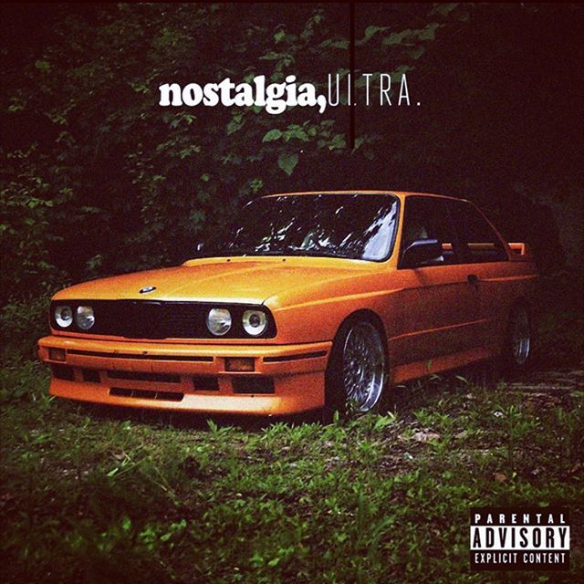
↗ Clique na capa para saber mais
Nostalgia, Ultra
Ano: 2011
Tipo: Mixtape
Estilo: R&B alternativo, soul e hip hop.
Projeto que ajudou a apresentar Frank Ocean ao público. Mistura melodias atmosféricas, referências musicais e narrativas sobre relacionamentos, juventude e experiências pessoais.
Faixas em destaque: Novacane, Swim Good e Songs for Women.
Channel Orange (2012)
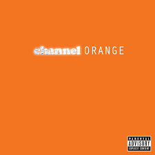
↗ Clique na capa para saber mais
Channel Orange
Ano: 2012
Tipo: Álbum de estúdio
Estilo: R&B, soul, pop psicodélico e funk.
O primeiro álbum de estúdio de Frank Ocean explora amor, solidão, desejo, desigualdade e identidade. Sua produção combina instrumentos orgânicos com arranjos experimentais e uma narrativa que percorre diferentes personagens e situações.
Faixas em destaque: Thinkin Bout You, Pyramids e Pink Matter.
Endless (2016)
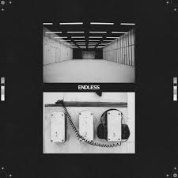
↗ Clique na capa para saber mais
Endless
Ano: 2016
Tipo: Álbum visual
Estilo: R&B experimental e música ambiente.
Lançado como um projeto audiovisual, Endless apresenta uma abordagem experimental, com texturas sonoras, transições entre faixas e uma atmosfera introspectiva. O projeto também antecedeu o lançamento de Blonde.
Faixas em destaque: At Your Best (You Are Love), Alabama e Comme des Garçons.
Blonde (2016)

↗ Clique na capa para saber mais
Blonde
Ano: 2016
Tipo: Álbum de estúdio
Estilo: R&B alternativo, pop experimental e soul.
Blonde explora memória, identidade, relacionamentos, amadurecimento e a passagem do tempo. Sua produção minimalista e suas mudanças de textura criam uma experiência musical íntima e contemplativa.
Faixas em destaque: Nikes, Ivy, Nights, Self Control e White Ferrari.
musicas mais ouvidas dos álbuns
Ivy
Faixa do álbum Blonde que retrata de um relacionamento passado. A música aborda amadurecimento, nostalgia e os sentimentos que permanecem após o fim de uma relação.
Self Control
Uma das canções mais emocionais de Frank Ocean. A letra fala sobre amor perdido, saudade e a dificuldade de seguir em frente depois de uma separação.
White Ferrari
Música introspectiva que explora temas como juventude, crescimento pessoal e lembranças marcantes. É conhecida por sua atmosfera melancólica e poética.
Godspeed
Canção delicada e emocionante que transmite uma mensagem de despedida e carinho. A música fala sobre desejar felicidade e sucesso para alguém importante.
Pink Matter
Faixa do álbum Channel Orange que mistura reflexões sobre amor, desejos e a complexidade dos relacionamentos humanos, com uma sonoridade suave e envolvente.
Pyramids
Uma das músicas mais ambiciosas da carreira de Frank Ocean. A canção apresenta uma narrativa extensa que conecta temas históricos, amor, poder e identidade.
Nights
Faixa muito elogiada de Blonde, conhecida por sua mudança de ritmo no meio da música. A letra aborda trabalho, família, perdas e transformações na vida dos artistas.
Solo
Canção introspectiva que trata de independência, solidão e autoconhecimento. Sua produção minimalista destaca a profundidade da letra.
Seigfried
Música reflexiva que explora dúvidas existenciais, sonhos e busca por propósitos. É considerada uma das composições mais pessoais de Frank Ocean.
Bad Religion
Faixa do álbum Channel Orange que utiliza uma conversa com um motorista de táxi como metáfora para expressar sofrimento emocional e amor não correspondido.
Singles
Novacane (2011)
Primeiro single de destaque de Frank Ocean. A música apresenta uma mistura de R&B alternativo e letras introspectivas, explorando temas como solidão, excessos e desconexão emocional.
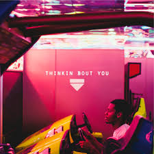
Thinkin Bout You (2012)
Um dos maiores sucessos de sua carreira. A canção fala sobre amor, saudade e vulnerabilidade, destacando a capacidade de Frank Ocean de transmitir emoções profundas.
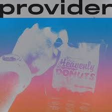
Provider (2017)
Single lançado após o álbum Blonde. A música apresenta uma atmosfera suave e reflexiva, abordando sonhos, relacionamentos e ambições pessoais.
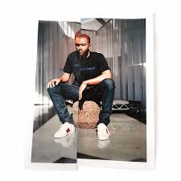
Chanel (2017)
Canção que discute identidade, dualidade e autoconhecimento. É considerada uma das músicas mais importantes da sua fase pós-blonde.
.jpeg)
In My Room (2019)
Single com influências eletrônicas e experimentais. A faixa apresenta uma sonoridade moderna e minimalista, característica do estilo inovador de Frank Ocean.
.jpeg)
DHL (2019)
Música que combina elementos de hip hop e R&B alternativo, trazendo reflexões sobre fama, sucesso e sua trajetória artística.
EPs e Projetos Curtos

Dear April (2020)
Lançado como single com versões alternativas e remixes. A música possui uma sonoridade melancólica e aborda temas relacionados ao amor e à passagem do tempo.
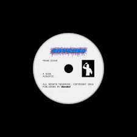
Cayendo (2020)
Canção com influências do pop latino e do R&B. A letra fala sobre vulnerabilidade emocional e dificuldades em relacionamentos amorosos.
Embora Frank Ocean seja mais conhecido por seus álbuns e singles, ele também lançou projetos especiais, versões alternativas e faixas exclusivas que ajudaram a consolidar sua reputação como um dos artistas mais criativos e influentes da música contemporânea.
Participações mais conhecidas
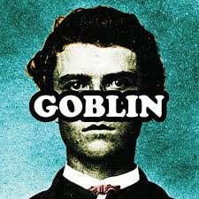
She (Tyler, The Creator)
A música conta a história de uma paixão obsessiva e dos sentimentos intensos por alguém.

No Church in the Wild (Jay-Z e Kanye West)
A música questiona poder, religião, moralidade e liberdade na sociedade moderna.

Made in America (Jay-Z e Kanye West)
Celebra a superação, o sucesso e a realização do sonho americano.
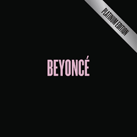
Superpower (Beyoncé)
Fala sobre amor, união e a força que duas pessoas têm quando permanecem juntas.
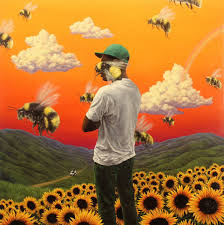
Where This Flower Blooms (Tyler, The Creator)
Trata de crescimento pessoal, sucesso e gratidão pelas conquistas alcançadas.
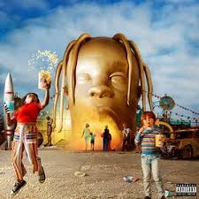
Carousel (Travis Scott)
Aborda ambição, fama e a busca por novos objetivos.
Frank Compositor
Antes de se tornar um cantor mundialmente conhecido, Frank Ocean trabalhou como compositor para diversos artistas. Suas composições abordavam temas como amor, saudade, crescimento pessoal e autoconhecimento. Esse período foi importante para desenvolver seu talento como escritor, que mais tarde se tornaria uma das características mais marcantes de sua carreira musical. Algumas de suas composições são:
Bigger (Justin Bieber)
Fala sobre crescimento pessoal, confiança e acreditar que é possível alcançar objetivos maiores.
I Miss You (Beyoncé)
Retrata a saudade e a dor de estar longe de alguém que se ama.
One Thing (Alicia Keys)
Fala sobre encontrar algo ou alguém que dá verdadeiro sentido à vida.
Prêmios e Reconhecimentos
Ao longo de sua carreira, Frank Ocean recebeu diversos prêmios importantes da indústria musical, sendo reconhecido por suas letras profundas, inovação artística e influência no R&B contemporâneo. Os prêmios são:
Grammy Awards (2013)
Frank ganhou 2 prêmios Grammy, a maior premiação nos Estados Unidos:
Melhor Álbum Urbano Contemporâneo
pelo álbum Channel Orange

Melhor Colaboração Rap/Cantada
pela música No Church in the Wild, ao lado de Jay-Z, Kanye West e The-Dream.

Além das vitórias, ele também foi indicado a categorias importantes como Álbum do Ano, Gravação do Ano e Artista Revelação.
Brit Award (2013)
Frank Ocean venceu o Brit Award de Melhor Artista Masculino Internacional, uma das maiores premiações musicais do Reino Unido.

GLAAD Media Award (2013)
Seu álbum Channel Orange recebeu o prêmio de Melhor Artista Musical da organização GLAAD, que reconhece artistas que promovem representações positivas e inclusivas.
Além dos prêmios, ele é frequentemente citado como uma das maiores influências da música do século XXI.
Curiosidades
- Em 2012, publicou uma carta aberta falando sobre um relacionamento amoroso com outro homem, tornando-se uma figura importante para a representatividade LGBTQIA+ na música.
- Em 2015, Frank Ocean alterou legalmente seu nome de Christopher Breaux para Christopher Francis Ocean.
- Frank tem grande interesse por automóveis, tema que aparece em várias de suas músicas e entrevistas.
- Diferente de muitos artistas famosos, Frank raramente compartilha detalhes de sua vida pessoal nas redes sociais.
- Ele tem grande influência na música atual. Artistas como SZA, Billie Eilish e The Weeknd já foram comparados ao estilo inovador e emocional de Frank Ocean.
- Frank é conhecido por esconder significados e referências em suas letras, o que faz com que muitos fãs passem anos analisando suas músicas.
Legado
Frank Ocean redefiniu os limites do R&B moderno ao combinar experimentação sonora, poesia e autenticidade em suas obras. Sua influência pode ser vista em diversos artistas contemporâneos, e seu trabalho continua sendo estudado e admirado por fãs e críticos ao redor do mundo.